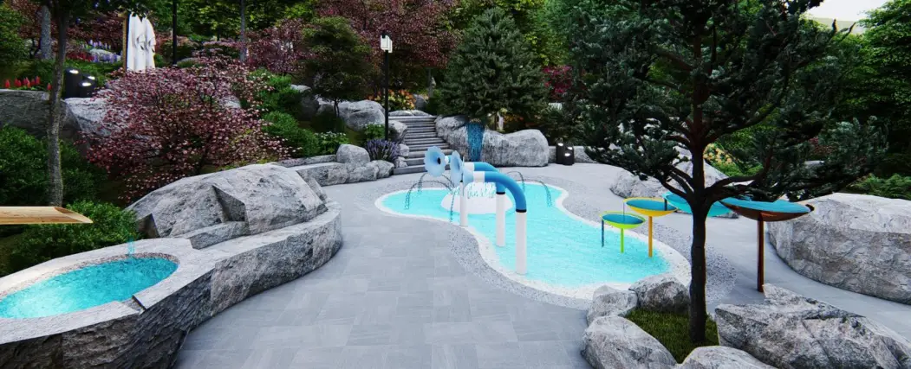
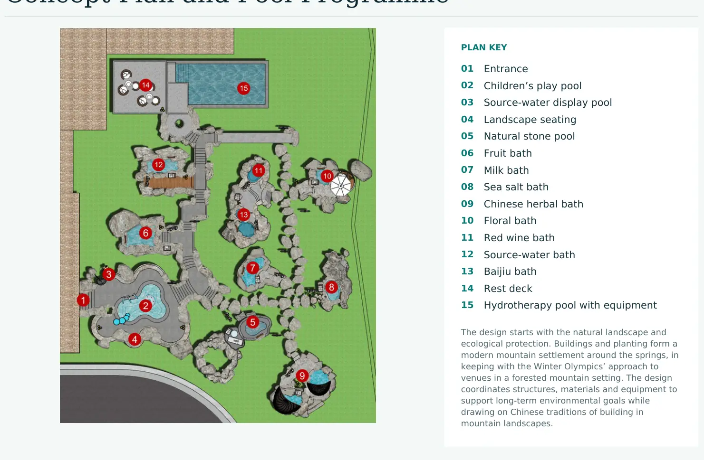
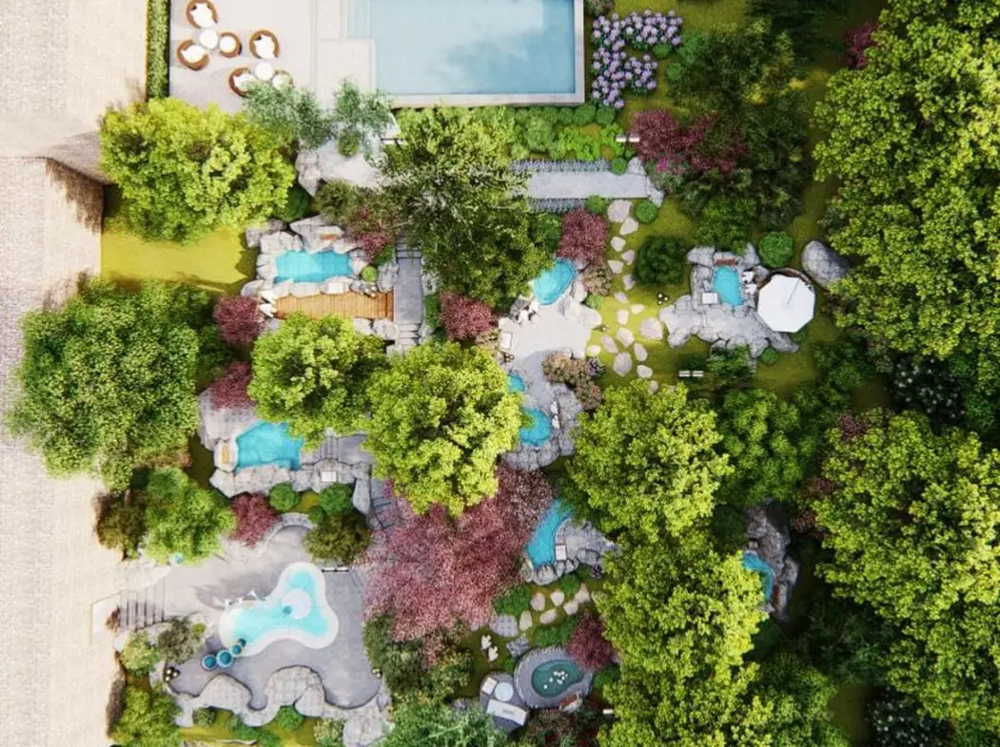
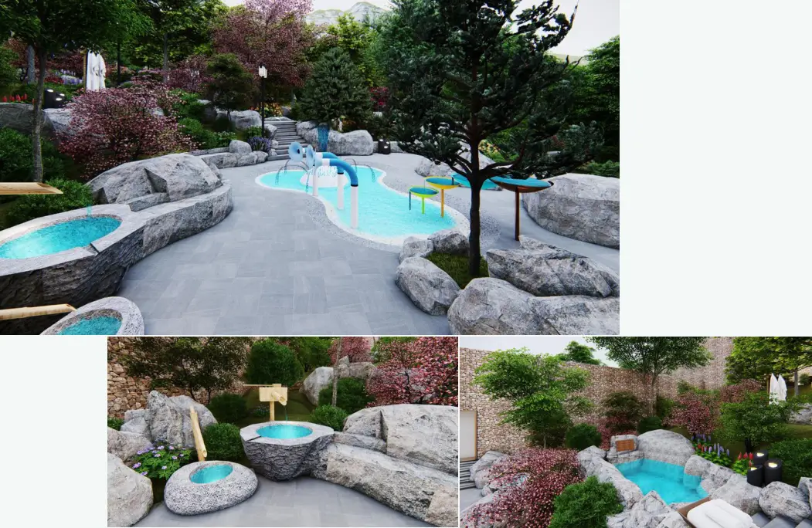
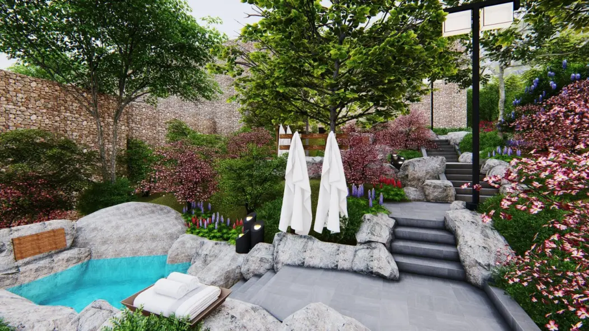
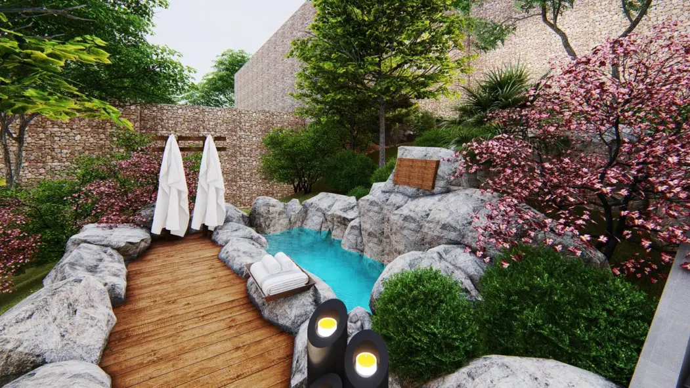

Yanqing Winter Olympic Village Hot Springs
Beijing · 2023 · Built
Drawings and imagery from the August 2024 company portfolio. Select a plate to view it at full size.












Beijing · 2023 · Built
Drawings and imagery from the August 2024 company portfolio. Select a plate to view it at full size.





